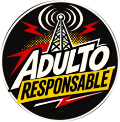

Condiciones del servicio
Última actualización: 25 de noviembre de 2026.
AR Shorts es una herramienta interna del programa Adulto Responsable (Radio CUCEI). No se ofrece al público: solo la usa el equipo del programa para publicar su propio contenido en su canal de YouTube.
- El contenido que se publica es responsabilidad del programa Adulto Responsable.
- El uso de la herramienta respeta las Condiciones del Servicio de YouTube.
- La herramienta se ofrece tal cual, sin garantías, y puede cambiar o dejar de funcionar en cualquier momento.
Dudas: mensaje directo en Instagram a @adultoresponsablefm.